I designed the Buy Online, Pick Up in Store (BOPIS) service for MoMA Design Store that seamlessly blends digital convenience with in-store pickup from 0 to 1.
Skills
User Experience Design
Service Design
Visual Design
User Research & Testing
My Team
1 Art Director, 1 Design Lead (Store), 1 Designer, 1 PM, 3 Marketing Specialists
Timeline
05.2021 - 10.2021
Overview
Context
The Retail department of The Museum of Modern Art's management team saw the opportunity of blending their online and in-person experience better to drive sales and lower shipping costs. As a initiative drafted before I joined the team, it was the first user experience design project I led as the digital design led.
Outcomes
Due to NDA restrictions, specific numbers cannot be disclosed. However, the following figures provide a general overview.
$200,000 ↑
Generating $200,000 in revenue from BOPIS sales.

Generating $200,000 in revenue from BOPIS sales.
Exploration
Challenge
Leveraging insights from the marketing team’s research, a BOPIS service holds great promise for an omnichannel retail strategy.
As a design lead, how can I craft a BOPIS service uniquely aligned with the MoMA Design Store experience?
As a design lead, how can I craft a BOPIS service uniquely aligned with the MoMA Design Store experience?
Key Design Decisions
Leverage Geolocation
MoMA Design Store has locations in New York City, Tokyo, Hong Kong, and Germany, but this service is currently exclusive to NYC. Using geolocation will help deliver a seamless experience for local users.
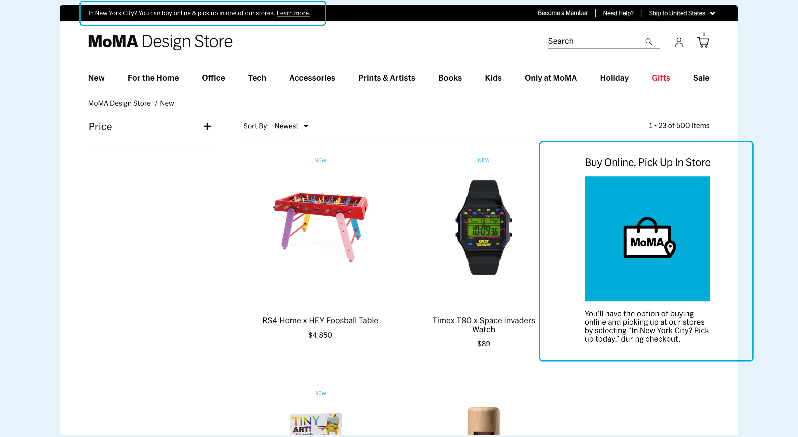
MoMA Design Store has locations in New York City, Tokyo, Hong Kong, and Germany, but this service is currently exclusive to NYC. Using geolocation will help deliver a seamless experience for local users.
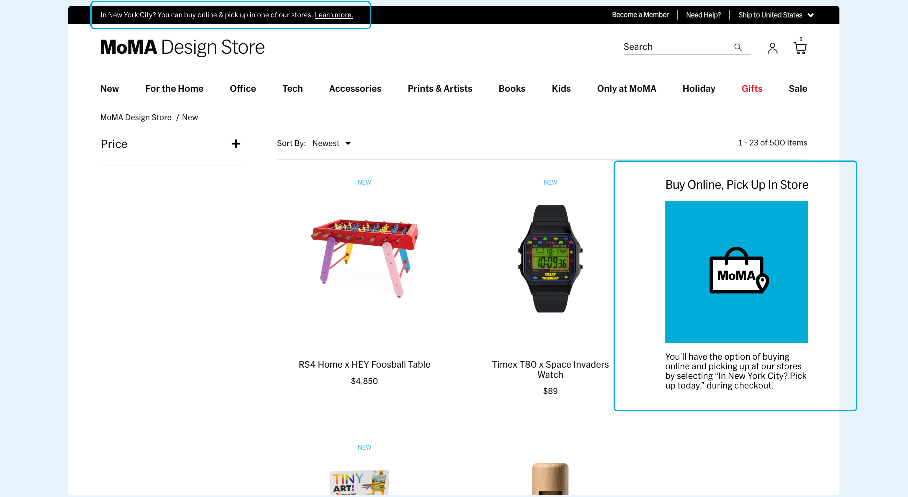
Prominent Display Across Digital Touchpoints
Making this service as part of the promotion campaign strategy in the post-COVID era, prominently feature this service across all digital channels to drive traffic to our stores.
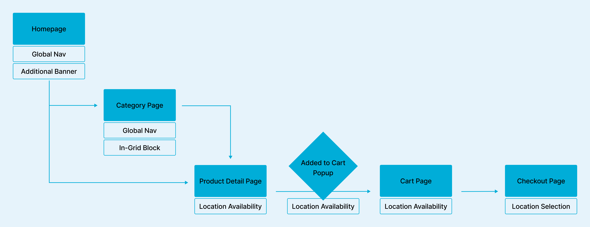
Making this service as part of the promotion campaign strategy in the post-COVID era, prominently feature this service across all digital channels to drive traffic to our stores.
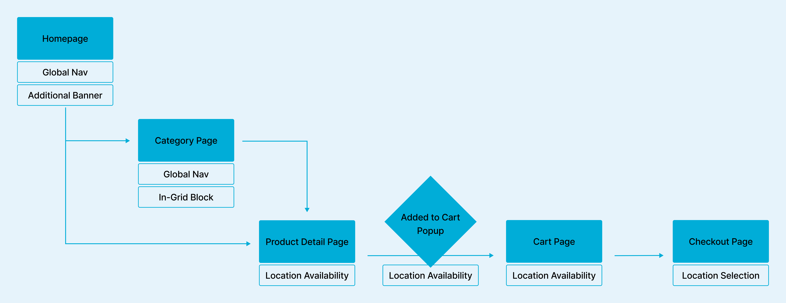
Clear Information During Add to Cart & Checkout
With four NYC stores, each with unique inventory, clarity on product availability and pickup location is essential at checkout.
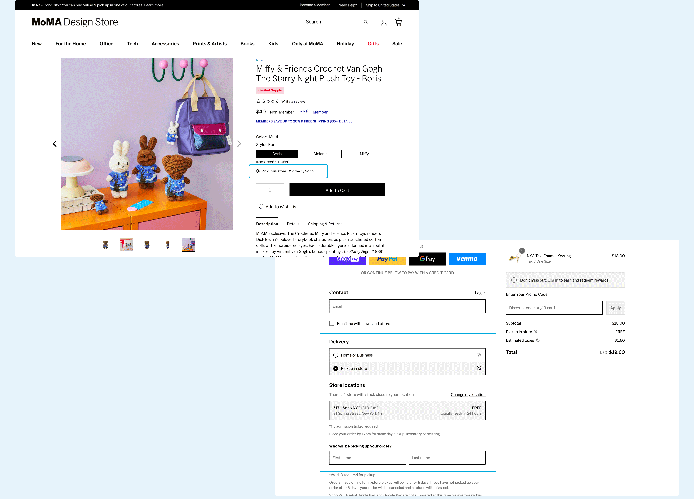
With four NYC stores, each with unique inventory, clarity on product availability and pickup location is essential at checkout.
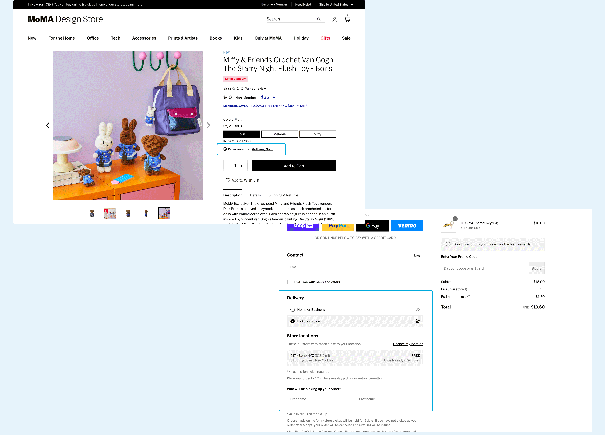
Problems & Constrains
Issues Identified through Internal User Testing
We did 10+ user testing sessions with the design prototype with internal team members who is not working on this project, and identified several issues.
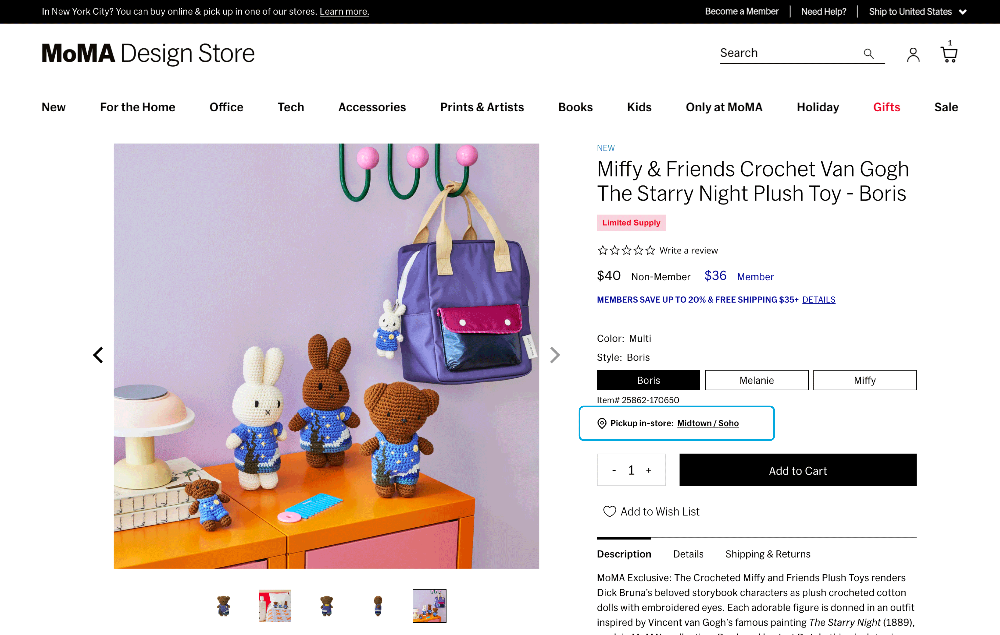
It is tedious to check product availability from each product detail page.
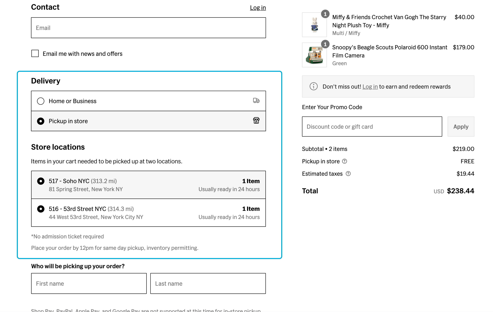
Many "customers" realize they need to pick up from multiple locations during checkout.
&
"Customers" feel confused and frustrated and will remove items from cart to only pick up from one location.
&
"Customers" feel confused and frustrated and will remove items from cart to only pick up from one location.
Constrains
When presented the solution to marketing and development team, we learned about the constrains below.
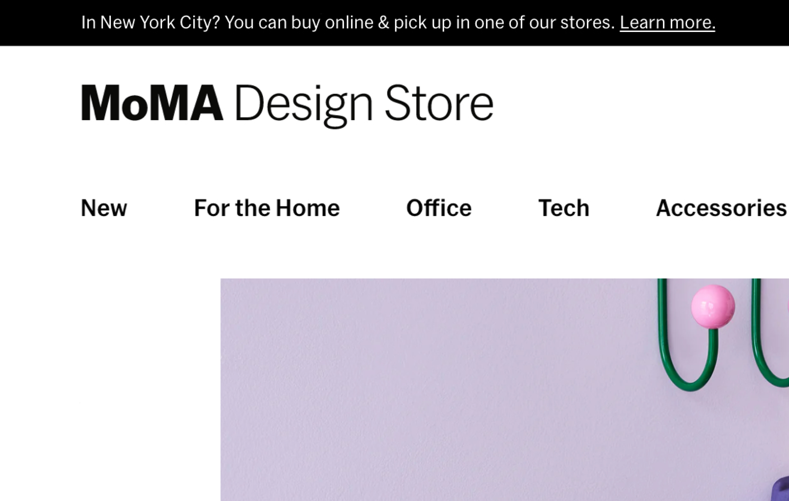
Learned from the marketing team, more browsers and telecommunication companies are blocking third-party cookies, which will impact the geolocation feature.
Learned from the development team, the current backend lacks the robustness to support product checkout and routing orders to multiple store locations. While feasible with sufficient resources, implementing this at the start of the holiday season presents significant challenges.
Key Iterations
Add additional filters.
For customers who have a general sense of which store they are planning to travel to, they could use a filter on all category landing pages to find products availabile to pick up at the specific store.
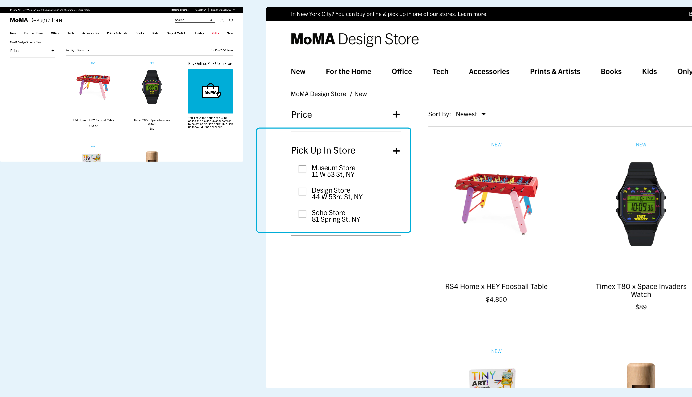
For customers who have a general sense of which store they are planning to travel to, they could use a filter on all category landing pages to find products availabile to pick up at the specific store.
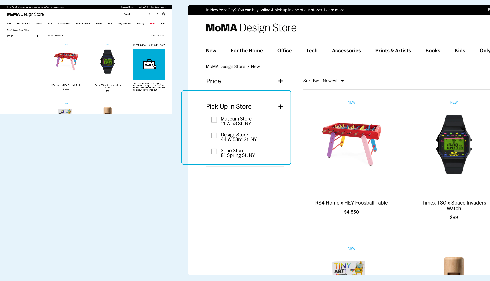
Allow pickup only at the same location.
Due to bandwidth issue of the development team, the team decided to postpone increasing the checkout robostness for Q4 2021.
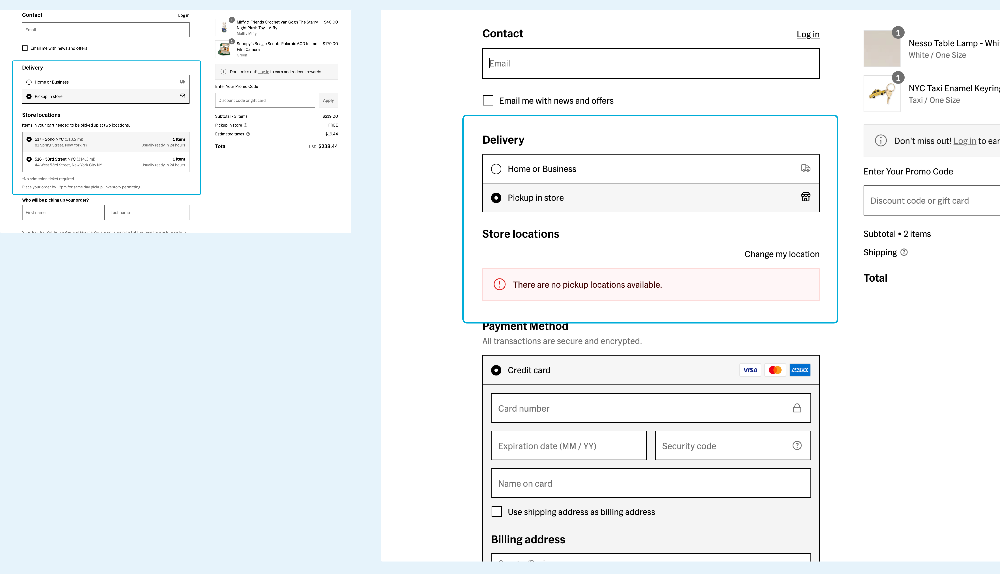
Due to bandwidth issue of the development team, the team decided to postpone increasing the checkout robostness for Q4 2021.
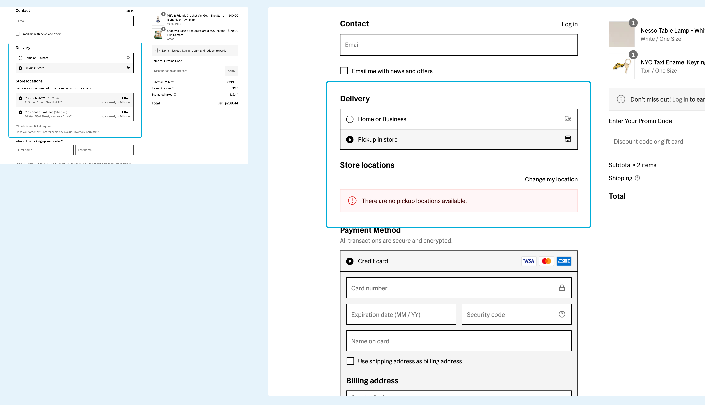
Future Looking
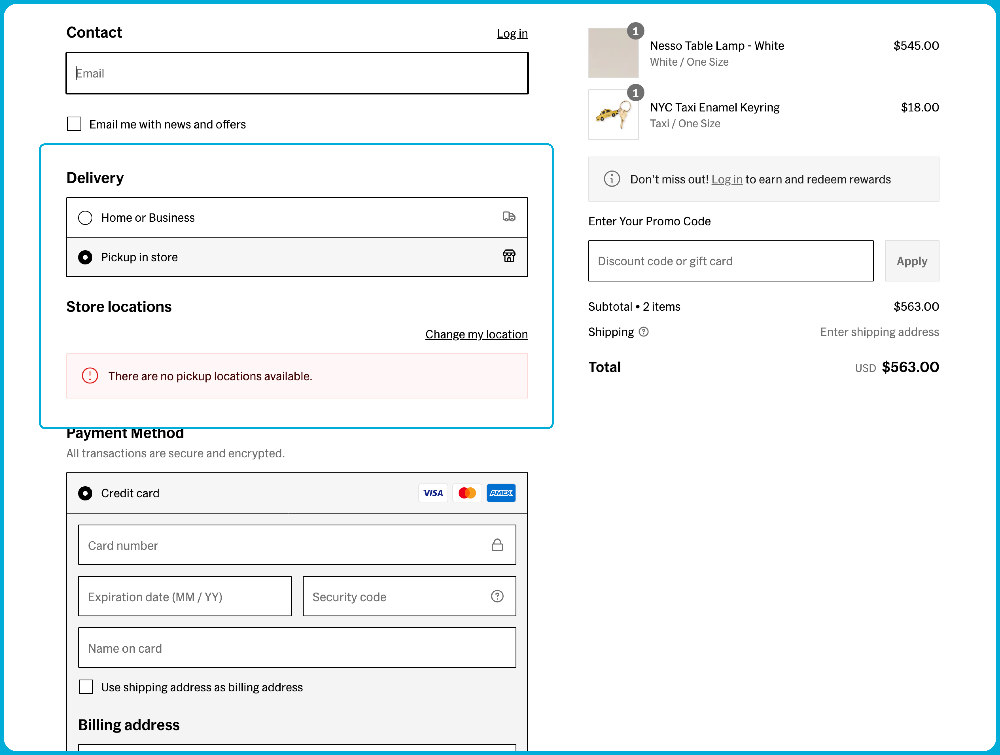
To further bridge the digital and physical shopping experience, the team planned to keep exploring the possibility of integrating the BOPIS and BOSHIP service. This will optimize our shipping and storaging strategy at the backstage and provide a more seamless frontstage shopping experience for our customers.
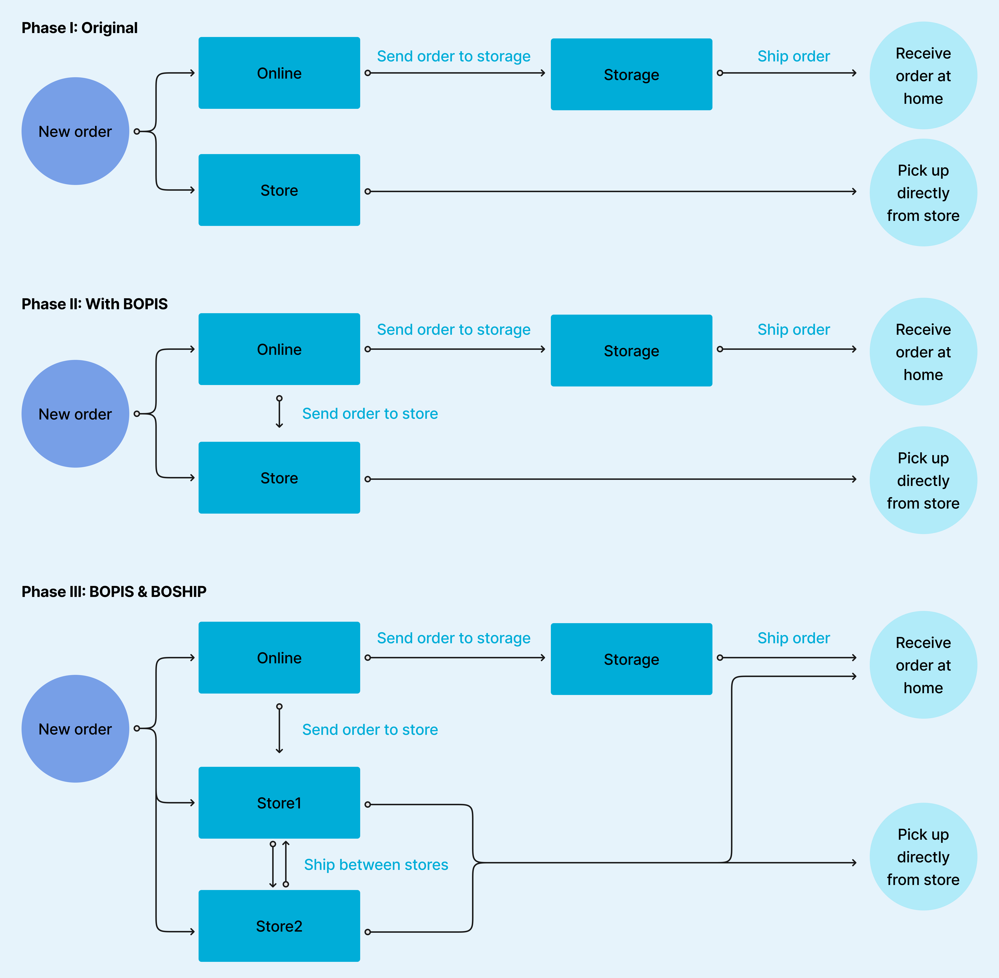
Looking closer at the order management flow, the MoMA Design Store successfully reached Phase II, enabling Buy Online, Pick Up in Store (BOPIS). This set the stage for further improvements to support multiple store locations and move towards adding Buy Online, Ship from Store (BOSHIP) capabilities.
Ads Collaterals
Besides the experience design, I also led the design of the advertising materials. Here are a few of the launch content.
Reflection
Leading the BOPIS feature as my first major user experience project at MoMA Design Store was both challenging and insightful. This experience underscored the critical role of stakeholder management, especially when working with a mix of internal and external contributors, including external partners and freelancers. I coordinated closely with cross-functional teams, from the marketing department to development and store operations, facilitating clear and efficient communication to align everyone’s objectives. Leveraging diverse perspectives allowed us to address complex challenges effectively and deliver a high-quality product on time.
Working on a UX project that seamlessly connects online and in-store experiences at the frontstage, while considering the backstage service flow was both challenging and exciting. This project was a rewarding opportunity to create a cohesive journey that felt natural and engaging across all touchpoints.